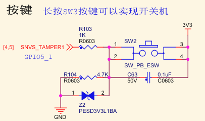
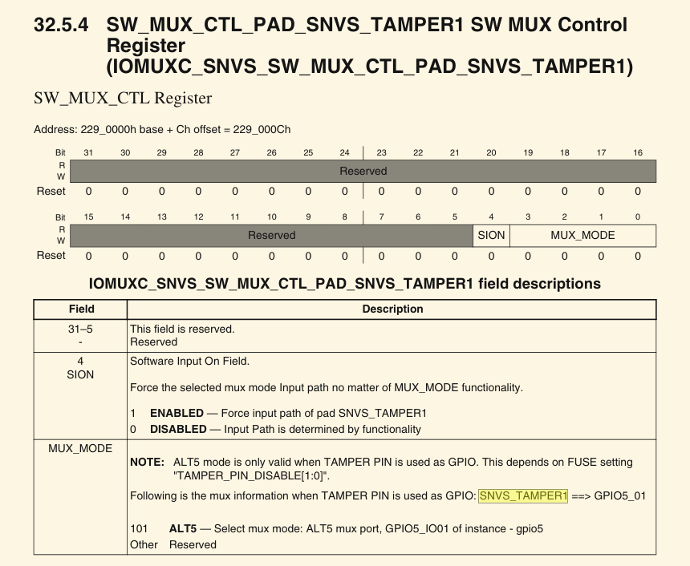
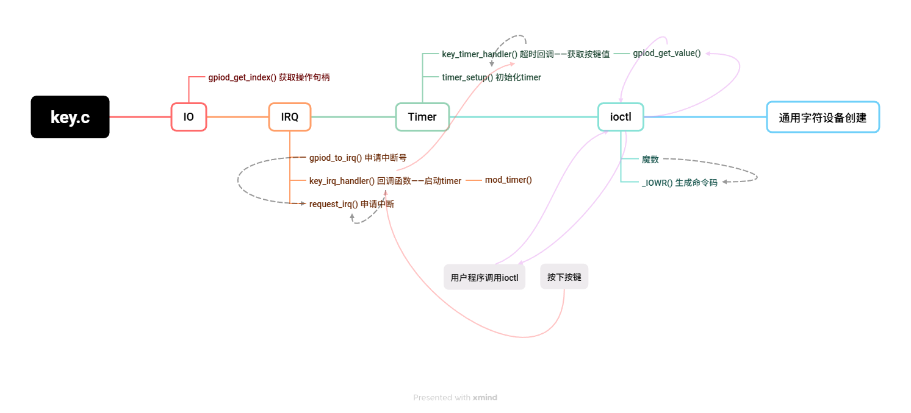

版权信息
warning
本文章为博主原创文章。遵循 CC 4.0 BY-SA 版权协议，转载请附上原文出处链接和本声明。
1. 实验内容
在设备树中添加按键外设“key”，同时使用pinctrl和gpio子系统，并使用中断系统启动定时器，并利用定时器进行消抖、读取按键值。
- 知识点：设备树、pinctrl、gpio、中断、ioctl、timer
未涉及INPUT子系统，还没学到。。。
2. 查询手册并配置Pinctrl、GPIO、dts
查询原理图：key使用的引脚名为 SNVS_TAMPER1

查询参考手册，搜索“SNVS_TAMPER1”
该引脚可复用为 GPIO5_IO01：——GPIO子系统配置条件已就绪

现在明确了pinctrl子系统的复用，还要配置电气属性。
在参考手册找到 SW_PAD_CTL_PAD_SNVS_TAMPER1 SW PAD Control，该寄存器用于配置 GPIO5_IO01 引脚的电器属性，各个位的含义我专门写了一篇文章——参见IMX6ULL引脚电气属性配置寄存器浅析，这里就不细说了。我们需要：
- 第16位 HYS 启用输入迟滞：1
- 第15-14位 PUS 启用100k下拉：00
- 第13位 PUE 选择上下拉电阻：1
- 第12位 PKE 使能PUE：1
- 第11位 ODE 失能开漏输出：0
- 第7-6位 中等 I/O速度：10
- 第5-3位 DSE 关闭输出：000
- 第0位 SRE 输出转换速度 慢：0
即 0x13080，——pinctrl 所有配置条件已就绪！
在iomuxc节点下添加 key 的引脚组：这是pinctrl节点（宏定义在imx6ull-pinfunc-snvs.h）
&iomuxc {
pinctrl_key: keygrp{
fsl,pins = <
MX6ULL_PAD_SNVS_TAMPER1__GPIO5_IO01 0x13080
>;
};
};中断的属性也可以写了，就是interrupt-parent和interrupts这两个，我们触发方式设置为双边沿触发，中断宏定义在include/linux/irq.h
那么我们把完整的设备树节点写出来：
/ {
key{
#address-cells = <1>;
#size-cells = <1>;
compatible = "gdm-key";
pinctrl-names = "default";
pinctrl-0 = <&pinctrl_key>;
key-gpios = <gpio5 1 GPIO_ACTIVE_HIGH>;
interrupt-parent = <&gpio5>;
interrupts = <1 IRQ_TYPE_EDGE_BOTH>;
status = "okay";
};
};最后在内核源码根目录下编译一波：make dtbs
3. 验证：使用ftp把dts传到开发板
使用ftp文件传输到开发板相关方法，参见——mx6ull开发版移植nxp官方u-boot
这里主要讲一下如何将nxp官方的uboot启动命令修改为“使用ftp从网络中下载dts”而不是mmc中的dts,不然你每次启动还是从mmc中加载
进入到 uboot 界面，使用 pri 命令查看环境变量，看bootcmd命令：
bootcmd=run findfdt;run findtee;mmc dev ${mmcdev};mmc dev ${mmcdev}; if mmc rescan; then if run loadbootscript; then run bootscript; else if run loadimage; then run mmcboot; else run netboot; fi; fi; else run netboot; fi使用递归的思想分析一波，设备启动后会进入 run loadimage 分支运行，最后运行 mmcboot 因此我们看mmcboot
echo Booting from mmc ...; run mmcargs; if test ${tee} = yes; then run loadfdt; run loadtee; bootm ${tee_addr} - ${fdt_addr}; else if test ${boot_fdt} = yes || test ${boot_fdt} = try; then if run loadfdt; then bootz ${loadaddr} - ${fdt_addr}; else if test ${boot_fdt} = try; then bootz; else echo WARN: Cannot load the DT; fi; fi; else bootz; fi; fi;注意到 loadfdt，推测这应该就是load dts文件脚本，转到 loadfdt
fatload=mmc ${mmcdev}:${mmcpart} ${fdt_addr} ${fdt_file}还真是兄弟，直接改一手：dtb名字自己确定
setenv fatload "tftp 0x83000000 imx6ull-gdm-emmc.dtb"
saveenv那么就ok啦，直接参考上面那篇文章网络传输dtb吧！
下载启动后，查看
cd /proc/device-tree/mykey
ls确有此节点并且属性与设备树文件里的一致。
4. ioctl介绍
4.1. 为什么需要 ioctl？
字符设备驱动一般会提供 read、write 接口，而 read/write 主要用于：
- read：从设备读数据
- write：往设备写数据
但驱动经常有一些“不是读写”的功能，比如：
- 设置按键工作模式
- 获取某个按键的值
- 清除缓冲区
- 开/关 LED
- 获取设备状态
- 执行复位
- 调节参数（如 PWM、波特率）
这些事情不是数据流，而是 命令。
read/write 是拿来传数据的，不适合传“指令”。
于是内核提供了一个专门用于“发送命令”的接口：
ioctl：I/O control（输入输出控制）
它的作用就是：
用户程序给驱动发送一个命令，驱动执行对应的动作。
4.2. ioctl 的模型
把驱动想象成一部“电器”，比如一个空调，你可以：
- read → 读取当前温度
- write → 写入要显示的内容
- ioctl → 控制空调的功能（调温度、开关机、风速）
也就是说：
ioctl 就是“控制面板上的按钮”。
用户程序通过 ioctl 给驱动发命令，驱动根据不同命令执行操作。
4.3. ioctl 函数的原型
驱动里必须实现一个函数：
long unlocked_ioctl(struct file *filp, unsigned int cmd, unsigned long arg);参数解释：
- cmd：命令编号（告诉驱动要做什么）
- arg：命令的数据（比如 key_id、温度等）
4.4. cmd 是怎么设计的？
魔数 + 命令号 + 数据类型。
Linux 使用宏来构造 ioctl 命令：
_IO()_IOR()_IOW()_IOWR()
这些宏会构造命令码，并把隐藏信息编码进去。
例如：
#define KEY_IOCTL_MAGIC 'K'
#define KEY_GET_VALUE _IOWR(KEY_IOCTL_MAGIC, 0x01, int)展开后，命令码包含信息：
| 内容 | 含义 |
|---|---|
魔数 'K' |
标识该命令属于 Key 驱动 |
命令号 0x01 |
这条命令是第一个功能 |
操作方向 IOWR |
读写用户空间 |
| 类型 | int |
这样做能保证不同驱动不会冲突。
4.5. arg 参数是什么？
看函数原型：
long unlocked_ioctl(..., unsigned long arg);arg 是一个“数字”，但为了传数据，通常我们让用户传 指针：
用户态：
int key_id = 0; ioctl(fd, KEY_GET_VALUE, &key_id);驱动态：
copy_from_user(&key_id, (int *)arg, sizeof(int));也就是说：
arg = 用户空间的数据地址
驱动读/写这个地址完成数据交互——也就是说，我把一个数据通过这个变量传入进驱动，驱动把要返回的数据通过这个变量再传回来
4.6. ioctl 内部流程
假设你要读某个按键：
用户程序：
int key_id = 2;
ioctl(fd, KEY_GET_VALUE, &key_id);驱动里发生的事情：
- 内核把命令放进 unlocked_ioctl
- 驱动判断 cmd 是哪个指令
- 使用
copy_from_user获取用户传来的 key_id - 根据 key_id 获取按键值
- 使用
copy_to_user把按键值写回 arg 指向的用户变量
最终用户程序里的 key_id 变成：key2 的值
4.7. ioctl 是如何区分命令的？
驱动里会写：
switch (cmd) {
case KEY_GET_VALUE:
...
case KEY_SET_MODE:
...
}cmd 就像电话打进来时的“分机号”，告诉驱动要执行哪个功能。
4.8. 小结
| 接口 | 用途 |
|---|---|
| read | 获取数据流 |
| write | 发送数据流 |
| ioctl | 执行控制命令 |
ioctl 原理：
- 用户程序调用 ioctl(fd, cmd, arg)
- 内核把 cmd 和 arg 传给驱动的 unlocked_ioctl
- 驱动根据 cmd 执行不同操作
- arg 用于传入参数或返回结果
- 命令码用魔数+编号生成，防止冲突
5. 编写实验代码
